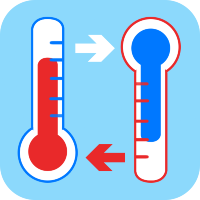

Conversión de Temperatura
Conversión de grados celsius (variable independiente) a otra temperatura aplicando redes neuronales e utilizando Tensorflow.js
Conversión de grados celsius (variable independiente) a otra temperatura aplicando redes neuronales e utilizando Tensorflow.js